地政学
ハバナはカリブ海とメキシコ湾の結節点にある首都で、米国との距離、革命外交、制裁、亡命、医療支援、港湾の安全保障が日々の背景にあります。湾岸の都市であることが、外交と暮らしを結びつけます。報道も伝えます。

🇨🇺 キューバ / カリブ海 / World City Atlas
メキシコ湾の入口に面する港湾首都です。植民都市の石造街区、革命の記憶、観光経済、音楽と信仰、老朽住宅、海風と高潮への備えが、日常の路地と海岸道路に重なります。
都市の骨格
ハバナは深い湾を持つ港、スペイン植民都市の旧市街、マレコンの海岸線、革命後の国家施設、住宅街、観光地区が近接する都市です。海に開きながら、政治と生活の制約も濃く映します。
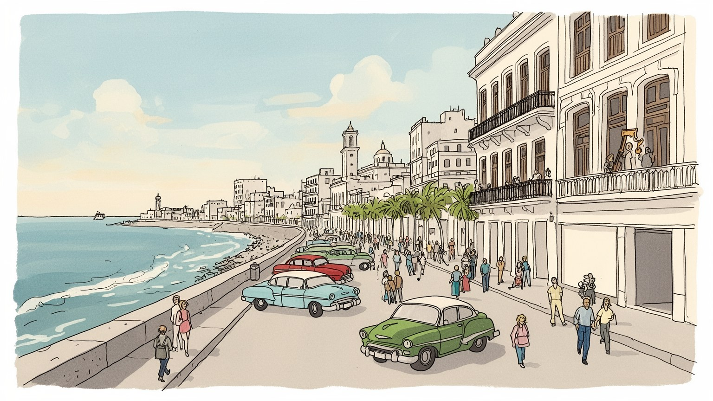
ハバナはカリブ海とメキシコ湾の結節点にある首都で、米国との距離、革命外交、制裁、亡命、医療支援、港湾の安全保障が日々の背景にあります。湾岸の都市であることが、外交と暮らしを結びつけます。報道も伝えます。
行政、港湾、観光、医療教育、文化、食品、修復工事が雇用を作ります。外貨に触れる仕事と配給、公共賃金、自営業、家族送金の差が大きく、運転手、清掃、調理、音楽家、売り子の働きも都市の日々を支えています。
スペイン系の教会、アフロキューバ宗教、革命儀礼、音楽、ダンス、野球、家族の祝祭が同じ街路に重なります。観光向けの演出だけでなく、祈り、追悼、練習、近所の会話が文化を保っています。暮らしの核でもあります。
旧市街やマレコンは旅人を引き寄せますが、住民には住宅老朽化、交通、物資不足、停電、医療、移住、高潮が切実です。観光収入と日常の負担が近く、学校帰りの子どもや高齢者の時間にも生活の工夫が続いています。
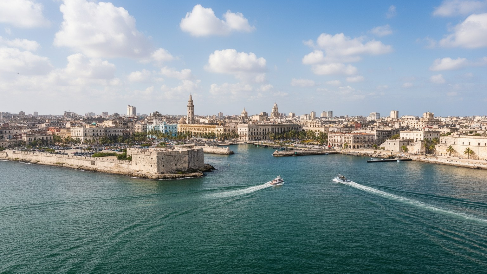
ハバナは、メキシコ湾へ開く深い天然港と、外洋に面した海岸線の両方を持つ都市です。湾の入口は狭く、内部は船を守れる広さを持つため、スペイン帝国の時代から大西洋交易、軍事、砂糖経済、カリブ海航路の要衝になりました。旧市街は湾口の西側に固まり、要塞、広場、教会、倉庫、税関、港湾労働の記憶を石の街路に残します。一方、海へ長く伸びるマレコンは防波堤であり、散歩道であり、若者の集まる場所であり、高潮が都市へ迫る境界でもあります。ハバナの地理は、美しい水辺の眺めだけではありません。港湾の油槽、フェリー、トンネル、鉄道、埠頭、住宅地、観光地区が湾を囲み、物流と日常生活が同じ海風を受けます。海に開かれた位置は外貨、観光、文化交流を呼び込みますが、同時に制裁、亡命、密輸、監視、気候リスクも運びます。湾と海岸を一緒に見ると、ハバナが島国の首都であるだけでなく、外の世界との接続を管理し続ける港湾都市であることが分かります。都市の距離感は、海岸線の開放感と、湾を回り込む移動の不便さの間で作られてきました。湾の東西を結ぶ交通、旧市街から郊外へ伸びる道路、港を避けて動く日々の移動は、地図で見るより時間がかかります。その遅さもまた、海が都市を豊かにしながら分断する力を示しています。地形は、観光の眺めより先に生活の条件です。
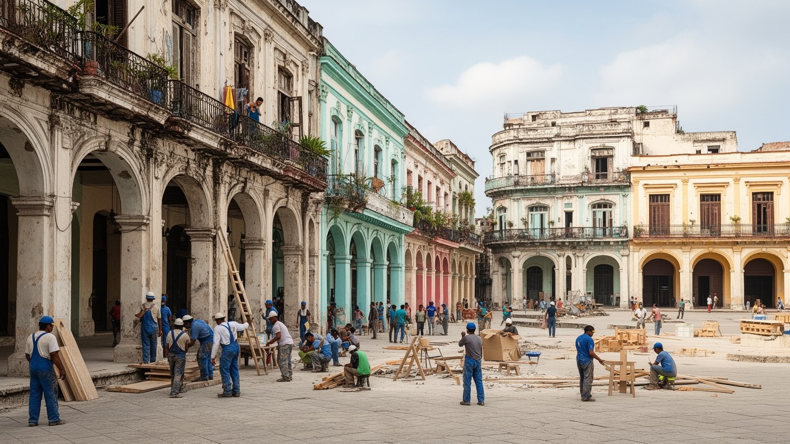
ハバナ旧市街は、スペイン植民都市の広場、回廊、教会、宮殿、要塞、石畳を濃く残す一方、単なる保存地区ではありません。大聖堂広場、アルマス広場、サンフランシスコ広場、港へ向かう通りには、帝国の交易、奴隷制、カトリック、軍事防衛、商人の富が刻まれています。建物のバルコニーや中庭は観光客の視線を集めますが、その背後には長く住み続ける家族、分割された住宅、修復の順番を待つ建物、職人の仕事があります。世界遺産としての修復は、崩壊を防ぎ、雇用を生み、博物館やホテルを支えました。しかし、歴史地区が外貨を稼ぐ場所になるほど、住民向けの商店や市場、学校帰りの子どもの道、生活空間が観光へ押し出される緊張も生まれます。植民都市の美しさを読むには、壁の色や車の古さだけでなく、誰の労働と支配によって富が集められ、革命後にその空間がどう再利用され、現在の住宅難と観光経済にどう関わるのかを見る必要があります。ハバナの遺産は、帝国の装飾と庶民の住まいが同じ建物に重なる点に力があります。保存とは過去を飾る作業ではなく、現在の生活を壊さずに建物を生かす交渉でもあります。観光用に磨かれた通りの隣に、修理を待つ階段や共同の台所が残ります。その近さが、遺産を商品ではなく暮らしの器として考えさせます。港へ向かう門や倉庫跡にも、支配と交易の記憶が残ります。
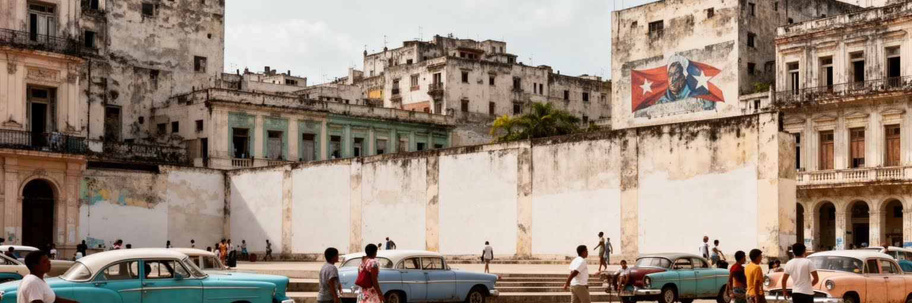
ハバナはキューバ革命の記憶を都市空間に刻む首都です。革命広場、ホセ・マルティの記念碑、政府機関、博物館、壁面の象徴、学校や職場の集会は、革命が過去の事件でなく国家の正統性を支える物語であることを示します。バティスタ政権の記憶、ゲリラ闘争、冷戦、ミサイル危機、米国との対立、社会主義建設、医療と教育の成果、言論や移動の制限は、同じ都市で語られます。ハバナの政治性は、巨大な広場だけでなく、配給所、学校、病院、新聞、ラジオ、近隣組織、国営職場にも現れます。革命の言葉は平等と主権を強調し、米国の影響に対抗する誇りを持ちますが、経済停滞、物資不足、若者の移住、政治的な発言の制約も都市の日常を形作ります。亡命家族や海外送金の存在は、革命国家の内と外が完全には分けられないことを示します。ハバナを理解するには、英雄像を称えるだけでも、体制批判だけでも足りません。街路に残る記念と、行列に並ぶ生活、医療教育への信頼、自由を求める不満が、同時にある都市として読む必要があります。革命の記憶は観光資源である前に、住民が国家との関係を毎日調整する言葉でもあります。世代によって革命への距離は異なり、祖父母の誇り、親の忍耐、若者の移住願望が食卓で交わります。学校で学ぶ歴史、新聞の見出し、野球中継の合間の話題もまた、首都の政治文化です。記念碑の周辺を歩くと、国家の物語と個人の将来が近く見えます。
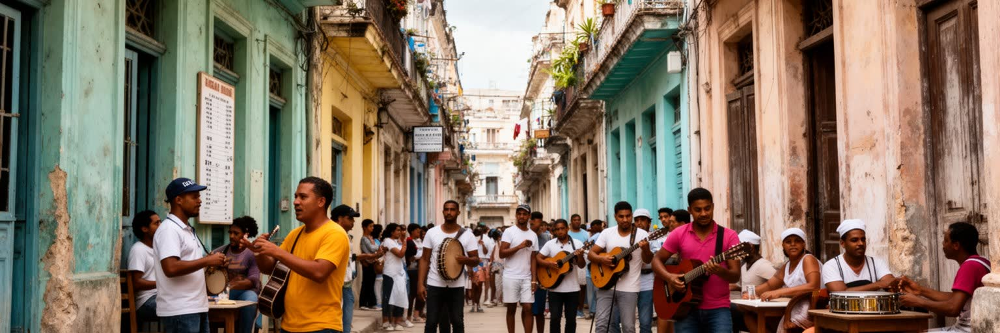
ハバナ観光は、旧市街、マレコン、クラシックカー、音楽、葉巻、ラム、要塞、海辺の夕方という強いイメージで世界に知られています。観光は外貨を生み、民宿、飲食店、タクシー、案内、音楽、修復工事、土産物、清掃、警備に仕事を作ります。とくに外貨に触れる職は、公共部門の賃金だけで暮らす人との所得差を広げ、家族送金を受け取れる世帯とそうでない世帯の差も大きくします。旅人が楽しむ生演奏の背後には、夜の練習、楽器の維持、許可、出演料の交渉があり、きれいに整えられた広場の背後には、清掃員、修復職人、食材調達、停電への対応があります。観光は都市の文化を支える一方、生活物資を観光地区へ吸い寄せ、住宅を宿泊へ転用し、住民向けの店や買い物の選択肢を減らすこともあります。ハバナの観光を読む時は、懐かしい風景を消費するだけでなく、なぜ古い車が残り、なぜ建物の修復が遅れ、なぜ外貨が生活を左右するのかを考える必要があります。観光の魅力と社会の不均衡は、同じ路地に並んでいます。旅の収入が地域の学校、住宅、医療、交通へ届くかどうかが、観光都市としての持続性を決めます。観光客に明るく見える接客の裏で、働く人は家族の食料、交通手段、停電後の営業を計算しています。市場も影響を受けます。労働の条件を見なければ、都市の華やかさは半分しか読めません。
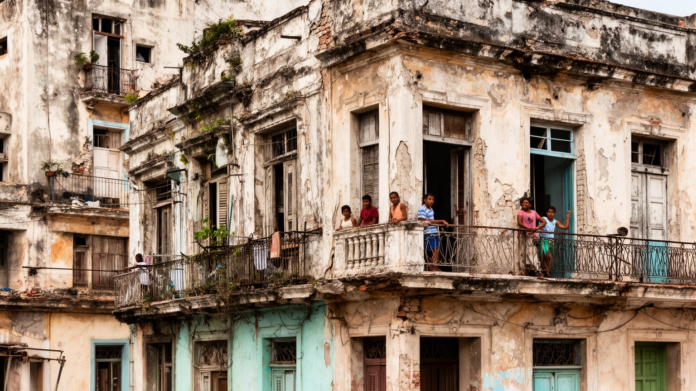
ハバナの住宅は、都市の魅力と脆さを同時に映します。旧市街やセントロ・ハバナには、植民期や共和国期の建物が多く残り、バルコニー、吹き抜け、中庭、装飾的な外壁が通りにリズムを作ります。しかし、長年の資材不足、塩害、雨漏り、過密居住、相続や所有制度の複雑さ、修復費用の不足により、建物の劣化は深刻です。美しい外観の内側で、家族が部屋を分け合い、水回りを共有し、階段や屋根の安全を心配しながら暮らすことがあります。歴史地区の修復は観光収入を使って進められ、職人技の継承や公共空間の改善にもつながりました。それでも、修復がホテルや店舗を優先すれば、住民の住まいは後回しになります。住宅問題は単なる建築の老朽化ではなく、所得、物資供給、移住、家族構成、福祉、災害リスクが絡む生活問題です。ハバナの路地を歩くと、洗濯物、椅子、子どもの声、年配者の休む玄関先、修理中の足場、崩れかけた壁が近い距離にあります。都市を保存するとは、絵になるファサードを残すだけではありません。住民が安全に住み、近所のつながりを保ち、修復の利益を受け取れる仕組みを作ることです。ハバナの住宅は、遺産都市の美しさが暮らしの安定と結びつくかを問う場所です。修復の順番が遅い地区では、住民自身の小さな補修と近所の助けが命綱になります。夕方の海風、湿った石壁、窓から漂う料理の匂いが、生活の密度を伝えます。
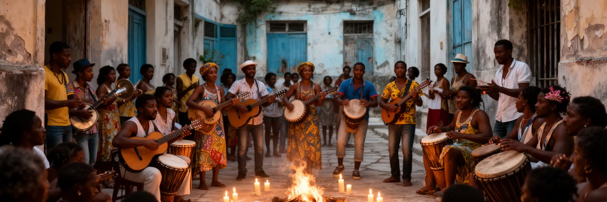
ハバナの文化は、音楽と宗教を切り離して語れません。ソン、ルンバ、マンボ、サルサ、ジャズ、レゲトンは、港湾労働、アフリカ系の記憶、スペイン語圏の歌、米国との距離、ラジオ、ダンスホール、家族の祝宴から育ちました。街角の演奏は観光向けの風景にもなりますが、音楽は本来、近所の集まり、宗教儀礼、学校、練習、夜の会話を通じて続く生活の技術です。宗教面ではカトリック教会に加え、ヨルバ系の信仰を受け継ぐサンテリア、霊的な実践、祖先への敬意が日常に溶け込みます。革命国家は世俗的な制度を重視してきましたが、家庭や地域の祈りは完全には消えず、困難な時期の支えにもなりました。音楽家、踊り手、宗教者、衣装や楽器を作る人、飲食を用意する人は、文化を身体で保っています。観光客が聞く明るいリズムの奥には、奴隷制、差別、混血、貧困、誇り、移住の経験があります。ハバナの音楽と宗教を読むことは、娯楽を鑑賞するだけでなく、住民が歴史の痛みを記憶し、共同体を作り直す方法を見ることです。リズムは商品にもなりますが、同時に人が生き延びるための言葉でもあります。教会の鐘、太鼓、窓から流れる歌、夜のクラブの低音、野球中継の声は、都市の時間を細かく区切ります。カーニバルや地域の祝祭では、衣装、食事、太鼓、踊りが通りを満たします。祈りと音は、公的な制度だけでは支えきれない不安を受け止めます。
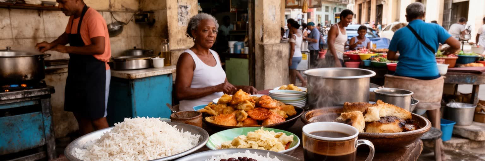
ハバナの日常は、食の調達からよく見えます。米、豆、豚肉、鶏肉、ユカ、バナナ、コーヒー、砂糖、ラムはキューバの食卓を形作りますが、物資不足、輸入依存、配給、価格上昇、外貨店、家族送金の有無が、毎日の献立を左右します。ロパ・ビエハ、豆の煮込み、揚げバナナ、サンドイッチ、甘いコーヒーは家庭と店を結び、料理は限られた材料を分け合う工夫でもあります。市場に並ぶこと、近所で情報を聞くこと、親族から物を融通してもらうこと、民宿やレストランで働くことは、食と経済を結ぶ日常の技術です。観光客が楽しむモヒートの背後には、食材の調達、冷蔵、燃料、停電、調理器具の修理、現金と外貨の問題があります。公的な医療や教育が都市の誇りである一方、生活物資を得る負担は家庭、特に女性や高齢者に偏りやすくなります。路上の売り子、窓越しの受け渡し、近所の助け合いは、制度だけでは埋められない不足を補います。ハバナの食文化を読むには、料理名だけでなく、食材がどこから来て、誰が並び、誰が調理し、誰が外貨を持つのかを見る必要があります。食卓は、家族、国家、観光、海外移住が交わる小さな地図です。油の匂い、コーヒーの香り、湿った市場の声が、味の豊かさと調達の苦労を同時に伝えます。食べ物を探す時間は、仕事や学習や休息の時間を削ります。その負担を誰が引き受けるのかを見ると、都市の不平等が家庭内にも及ぶことが分かります。
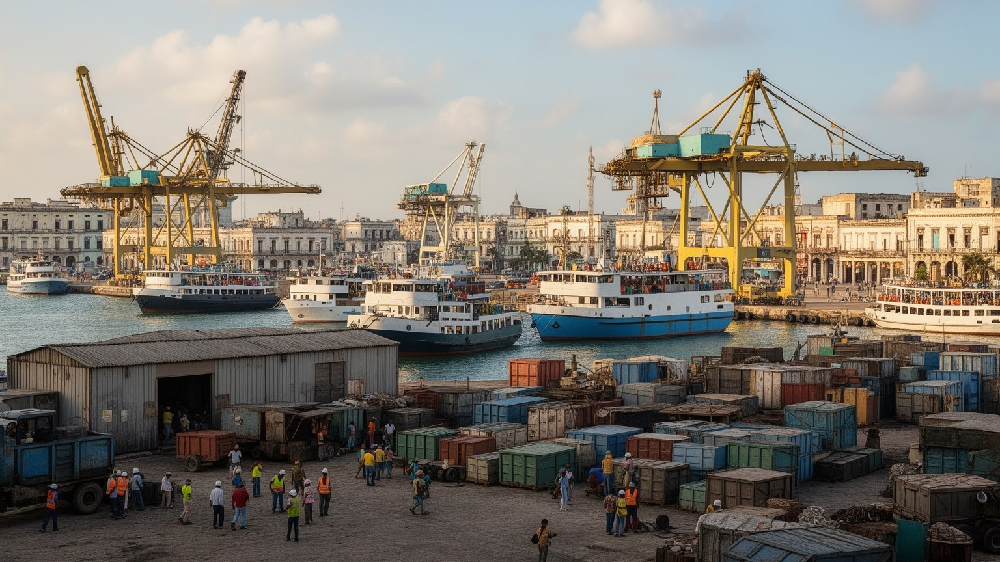
ハバナの経済は観光だけではなく、湾岸の港湾、行政、教育、医療、物流、食品、建設、文化産業に支えられています。港は歴史的に砂糖、タバコ、奴隷貿易、軍事物資、石油、日用品の流れを扱い、現在も島国の輸入と都市生活を支える重要な装置です。ただし、米国の制裁、外貨不足、インフラ老朽化、燃料供給の不安定さは、港湾経済を制約します。湾岸の一部機能は他港や新しい物流拠点へ移り、ハバナ中心部では港湾跡地の再利用、観光、フェリー、倉庫の改修が課題になります。公共部門の賃金だけでは生活が難しいため、自営業、家族送金、観光関連収入、副業、路上販売、物々交換のような関係が都市経済を補います。医師、教師、技術者のように社会的に重要な仕事でも、外貨に触れる観光職より所得が低くなることがあります。港湾都市としてのハバナを見るには、コンテナや埠頭だけでなく、燃料が届くか、バスが走るか、修理部品が入るか、商店や市場に商品が並ぶかまで追う必要があります。経済の制約は抽象的な政策ではなく、行列、停電、交通待ち、建物修理の遅れとして現れます。港は外へ開く入口であると同時に、不足が都市へ流れ込む場所でもあります。港湾労働者、税関職員、運転手、倉庫の保守、船の補給は目立ちませんが、都市の供給を支える要です。流通が滞る時、その影響は食卓と職場にすぐ届きます。
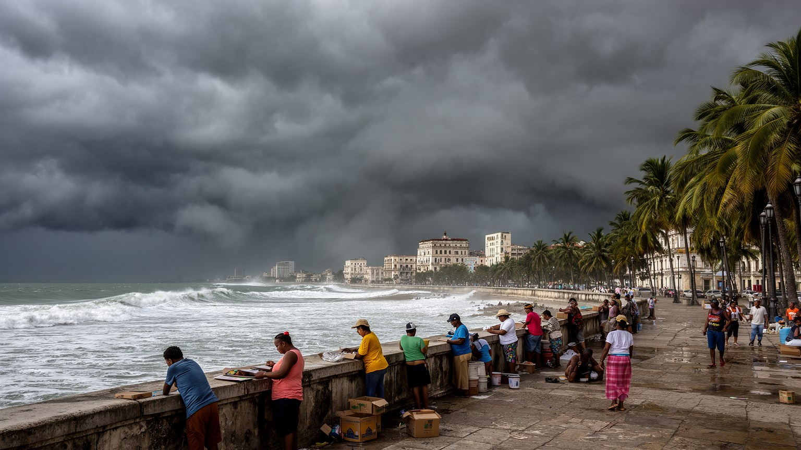
ハバナの気候は熱帯性で、乾季と雨季、強い日差し、湿気、海風、ハリケーンの季節が生活を形作ります。マレコンを越えて波が街路に入る光景は、都市の象徴であると同時に、海面上昇と高潮リスクを分かりやすく示します。海岸沿いの建物は塩害を受け、古い住宅やインフラは雨漏り、排水不良、停電、道路冠水に弱くなります。気候リスクは観光の不便だけではなく、低所得世帯、高齢者、障害者、修復を待つ住宅、医療施設、交通に直接影響します。強い暑さは屋外労働、通学、停電時の室内環境を厳しくし、水の確保や衛生も重要になります。ハバナは医療と防災動員に強みを持ち、ハリケーン接近時の避難や情報伝達には長い経験がありますが、建物や排水設備の更新には資金と資材が必要です。海岸の美しさを守ることと、住民を危険から守ることは同じ条件です。気候変動が進むほど、防波堤、排水、緑陰、住宅補修、避難所、交通復旧、エネルギーの安定が都市政策の中心になります。ハバナを見る時、夕方の海辺の開放感と、次の嵐に備える緊張を一緒に読む必要があります。海は都市を世界へ開く窓であり、同時に脆さを突きつける力でもあります。防災の力は避難計画だけでなく、どの家が補修され、どの道路が排水され、どの世帯へ情報が届くかで決まります。気候適応は生活の公平性でもあります。
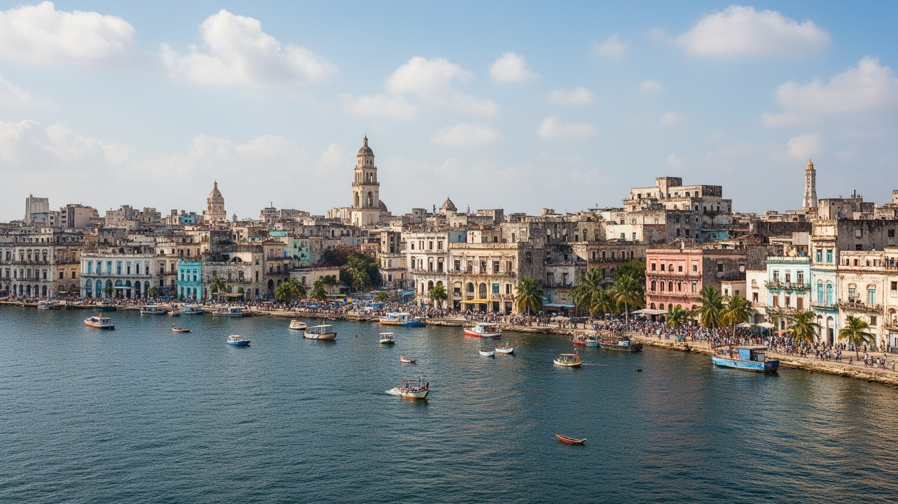
ハバナは、絵になる旧車や色彩ある街並みだけで理解できる都市ではありません。湾岸の地理、植民都市の遺産、革命国家の記憶、米国との距離、制裁下の経済、観光外貨、家族送金、音楽と宗教、住宅の老朽化、気候リスクが、同じ街路で重なっています。旅行者が見る懐かしさは、住民にとっては資材不足、修理の遅れ、移動の制約、食材調達の苦労と隣り合います。一方で、医療や教育への誇り、近所の助け合い、音楽の力、野球を語る時間、海辺で集まる時間、歴史を守る職人の技も、この都市の重要な強さです。ハバナを読むには、革命を理想化するだけでも、貧しさだけを強調するだけでも不十分です。旧市街の広場、港の倉庫、マレコンの防波堤、住宅の階段、宗教儀礼の部屋、観光向けのレストラン、配給所、学校、球場、病院を同じ地図に置くことで、都市の複雑さが見えてきます。ハバナは外の世界へ開かれたい都市でありながら、政治と経済の制約を背負う首都です。その緊張こそが、カリブ海の文化都市としての魅力と、住民が向き合う現実を同時に形作っています。海風の明るさと生活の重さを一緒に見ることが、ハバナを読む出発点になります。港から旧市街へ、海岸から住宅の中庭へ、記念碑から食卓へ視線を移すと、都市の評価は単純な美しさを越えます。ハバナの価値は、困難の中で文化と共同性を保つ力にもあります。